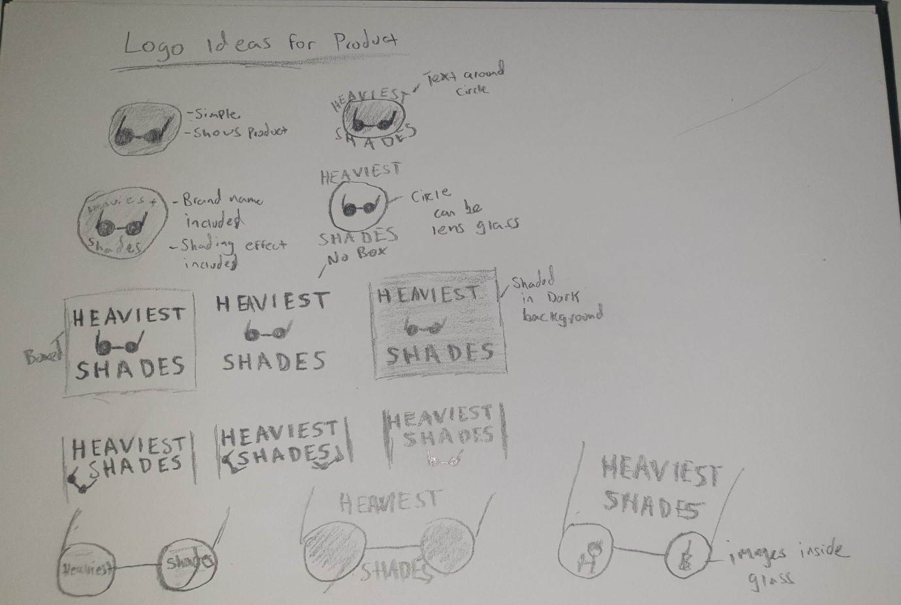
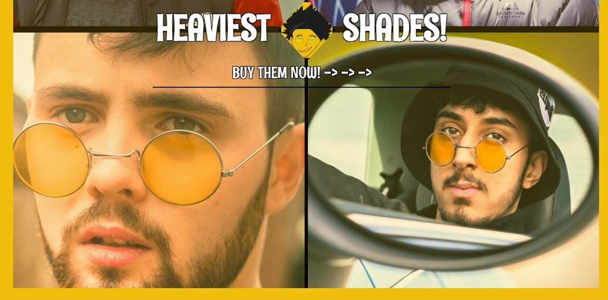

For this project, John Lennon glasses have been chosen. When is comes to advertising it is something which can cater a wide audience both male and female.
The fact that the glasses represent a huge artists could also help with advertising if used properly, people may feel more entitled to buy these glasses to represent the artists.
Sunglasses is also something everyone wears at some point and has a large market throughout the world especially in hot countries.
This product can be advertised in many ways and can target the customer emotionally as it represents a big artist as well as having good visual appeal.
Researching
After figuring out a methodology and how to go about this project, one of the first things I did was research.
I looked into many of the popular e-commerce websites and went into detail about what makes these websites popular.
Finding out the key to their popularity, and the kind of advertising features they use would be an important aspect for me to learn
how to create a successful website to advertise the product I had chosen.
Understanding the Users
Once I found out why these popular websites where so popular in the form of the layouts and features used,
I moved onto focusing on users of their website, and when they would want to look for in my website to keep then on the site
and acually make a purchase rather than clicking off. To find this out User Personas, Empathy Maps and User Journeys where created
Sketches
Afer this was done I had a general idea of what users would want to see,
This included having high quality images.
Having features which immediatly makes them say "Wow".
They also need to see the price, and the good feautures of the product, to increase chances of purchase
and to make the customer feel at ease.
I could then move further onto the designing stage, keeping what I had learnt from user research in mind.
There where many designs when it came to sketches, I had included many of the features shown on most modern e-commerce websites.
This included features such as having the product at the center of the page, and allowing users to see various images of the product,
with text around the central image descriping features and the price of the product. The colours used also matched modern themes,
making the use of white and black, followed by an additional colour, in this case it was yellow to match the colour of the glasses.

The logo design was another important factor, giving the product its own identity. Having it's own logo and brand increases sales,
as seen with designer product they sell out because of the big brands behind them. A lot of the logo's where made showing the glasses,
however after sketching many of them, I realised there was no need to have the glasses within the logo and it could be anything,
therefore I sketched some designs without including them.
Creating the Assets
When the sketches where complete, I then moved onto creating the multiple assets which will be used for the website.
This was done within Photoshop and Illustrator to create various Logo's as well as banners.
When designing the logo's having just the glasses was scrapped, this was because the customers already knew what they where looking for,
so having something else which stands out to the customers would have a better effect, for this reason I decided to create some logo's representing
John Lennon, as well as creating my own character.
When the logo’s had been created, A few banners were made using the logo. The John Lennon logo seemed like the best bet.
This was because it represented a big artist, and attract more customers because of this.
A lot of high-quality images there taken with a camera, with a white background and lighting above them so they can be easily edited.
Selected images of people wearing the glasses, taken with a camera. Having users wearing the glasses is a good option as it shows users how it may look on them.
Prototyping
When all the Assets where gathered, I could then move onto Prototyping.
This was done using Figma.
When it came to prototyping, at first it was done exactly as shown in the sketches,
however the more it came to life I realised it did not look as good as expected, it seemed too simple.
I then changed the background colour to the yellow which was supposed to be used only for outlines and the navigation bar,
and it started to look much more lively,
it made the glasses stand out more and gave a happy summer feel to the website which is exactly what I wanted to represent when selling these sunglasses,
the lens on the glasses where also yellow so it was a perfect match.
At first I went with the John Lennon logo ,
so a banner was created using this, however I thought the logo was too mainstream and expected so I wanted to change things up and make something original and unique,
so I attempted to make my own character to represent the glasses, Once it was created I decided not to use the banner and go with the original character I had created,
I also thought the website looked better without having a banner above the navigation bar.
The colours as well as the images go very well with his product,
the images are high quality and show the customer how they look closely, as well as this the images of people wearing the glasses,
show users how they could expect to look when wearing them.
The good use of colours and logo give the product a unique identity giving them a premium feeling attracting more customers to buy the product.
Developement
When I was happy with the prototyping, I decided to finally do the build. It was done with both HTML and CSS.
https://github.com/creedgohard/HeavyShades
The whole process can be seen on GitHub, as many commits were made during development.
CSS Grid was used throughout the whole page.

In the end a banner was included, however instead of making one in Photoshop, one was created using CSS and HTML.
This looked better as it immediately catches the eye of the customer, letting them know what the brand is called.
Underneath, is the navigation bar followed by some very high quality images taken on the camera and edited in Photoshop.
It is important for the customers to know how the glasses look on people therefore I didn’t use just the images of the glasses,
as people wearing them was more realistic, as well as it this is looked much more attractive displayed on the website.
It was also important to make the cheap glasses look as good as possible, and the best way to adveritise this is to have people wearing them
and looking cool.
When it came to placing the logo in the middle a lot of steps where done, first attempt was done with grid, however it did not match the borders.
Tesing and Conclusion
In conclusion, the website was created to advertise the chosen product using modern techniques.
From the research and user personas, it was found out that having high quality images of the product along with the right use of colours had the highest success rate and this was looked at through sketches and prototyping,
it was then bought to life through development and turned out very similar to the prototype.
It could be said that the project turned out to be successful however not perfect,
Animation could have been used to further enhance the webpage along with more images with user scroll,
a rotating feature could also have been added to show all angles of the glasses however this may not have suited the aesthetic of the webpage,
for this reason it was not included.